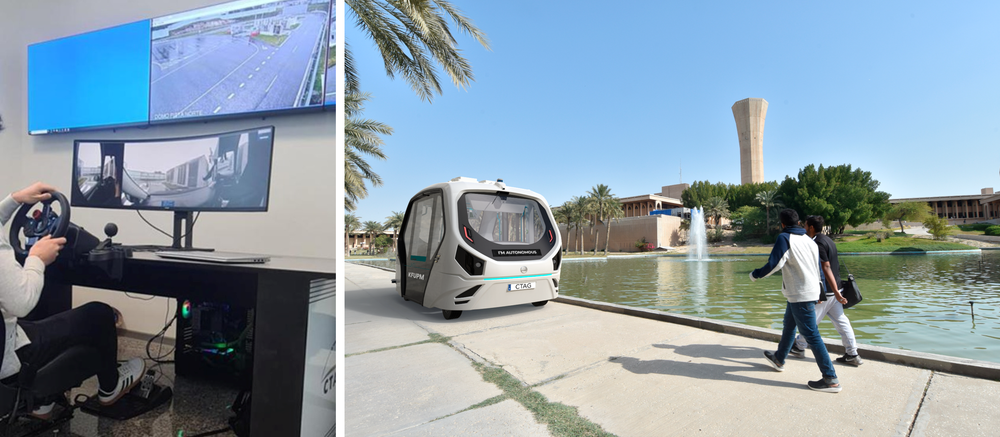
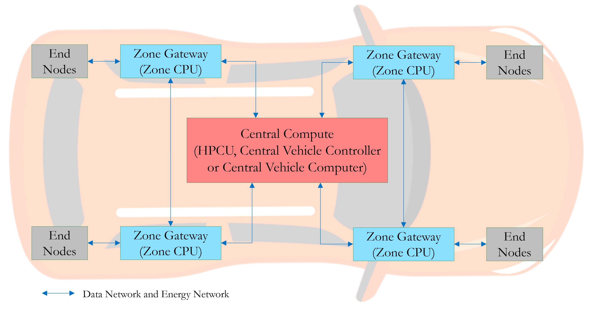
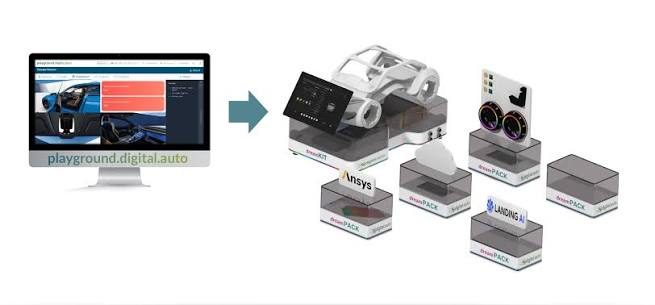
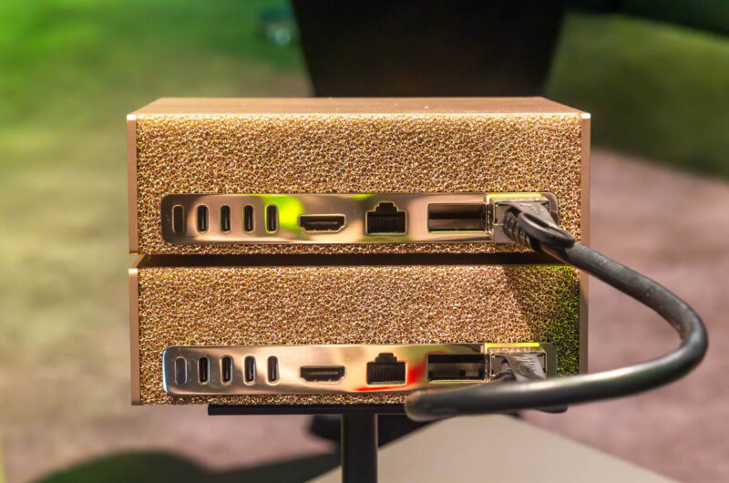

Facilities
Research platforms and computing infrastructure available to the lab.

Assisted and Automated Driving Research Platform
A state-of-the-art platform supporting research across perception, planning, control, connectivity, and remote operation. It enables comprehensive experimentation across the full driving stack, supporting sensor fusion from LiDAR, radar, and cameras, along with real-time object detection and tracking for situational awareness. Advanced planning and control modules facilitate research in motion prediction, trajectory generation, and adaptive vehicle control for both assisted and fully automated driving scenarios. Connectivity features enable exploration of cooperative driving concepts using Vehicle-to-Everything (V2X) communication, while the tele-driving module supports studies on remote vehicle operation and supervision.

Software-Defined Vehicle (SDV) Testbed
An open, modular, software-defined architecture that decouples hardware and software layers and follows a centralized zonal design aligned with modern automotive electronic and electrical (E/E) systems. The platform allows researchers to develop, deploy, and test new functionalities independently of physical vehicle components. Vehicle functions are consolidated into powerful computing domains connected through high-speed networks, enabling research into over-the-air software updates, embedded intelligence, cross-domain integration, and real-time data processing. The platform also supports experimentation with digital twins, edge computing, and AI-driven control strategies.

SDV Prototyping Platforms: dreamKIT and digital.auto
The lab leverages dreamKIT and digital.auto as complementary platforms for rapid prototyping, experimentation, and education in software-defined vehicles. dreamKIT provides a hands-on environment for developing and demonstrating SDV concepts, enabling researchers and students to experiment with vehicle functions, sensors, interfaces, and software applications without requiring a full-scale vehicle. digital.auto complements this with an open, collaborative ecosystem for prototyping software-defined vehicle functionality using standardized vehicle APIs and virtual vehicle environments. Together they provide a flexible bridge between software prototyping and deployment on the lab's physical SDV testbed.

High-Performance Computing Workstations
The lab is equipped with high-performance computing resources that enable data-intensive research and advanced simulation studies. The facility includes two NVIDIA DGX Spark systems with 4 TB storage and integrated DLI bundles, providing GPU computing capabilities for deep learning, perception, and control algorithm development. These systems are complemented by Dell Precision 5860 workstations powered by Intel Xeon W3-2423 processors and Dell U4025QW UltraSharp 40-inch curved Thunderbolt hub monitors, providing a powerful environment for software development, large-scale data visualization, simulation, and AI model training.